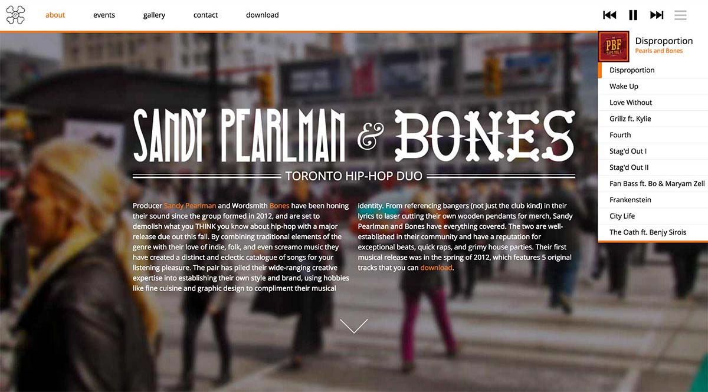

Stagout.com is a website for Toronto hip-hop duo Sandy Pearlman & Bones. The user’s attention is immediately brought to the music player as soon as the page loads to emphasize the main aspect, the music. Throughout the rest of the site the duo’s gritty visual style is apparent in the visuals and contrasts with the more functional, clean navigation to create a better ease of access.
Credits:
Tracy Baker — illustrations
Jake Oliveira — branding
Back to Work